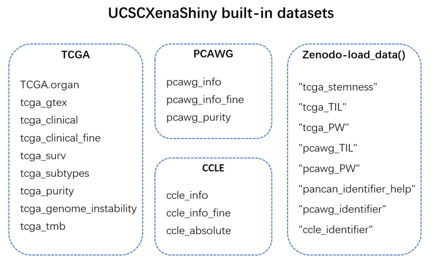
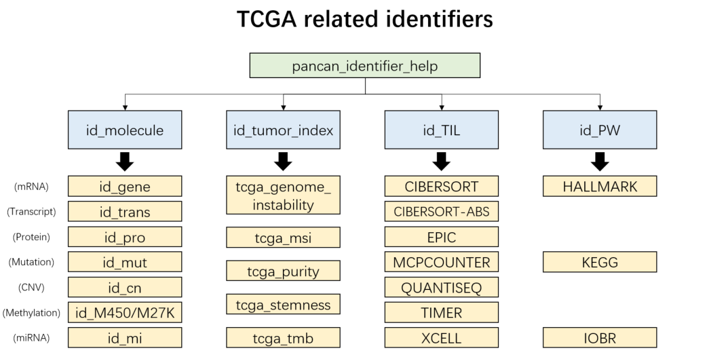
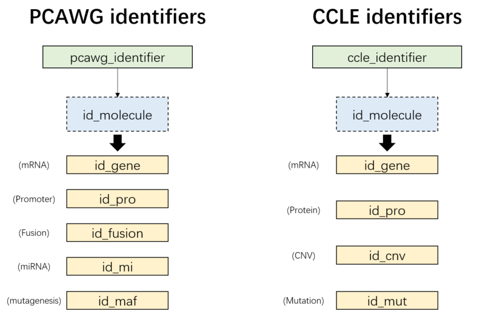

Chapter 3 Built-in datasets

Figure 3.1: UCSCXenaShiny built-in datasets
Non-omics supplementary tumor data for extensive analysis.
3.1 TCGA
TCGA.organ: Detailed information of 33 TCGA projects
## TCGA Detail organ
## 1 BRCA breast invasive carcinoma breast
## 2 PRAD prostate adenocarcinoma prostate
## 3 OV ovarian serous cystadenocarcinoma ovary
## 4 PCPG pheochromocytoma & paraganglioma
## 5 GBM glioblastoma multiforme brain
## 6 HNSC head & neck squamous cell carcinomatcga_gtex: Merged information of TCGA and GTEx samples
## sample tissue type type2
## 1 TCGA-D3-A1QA-07 SKCM SKCM_tumor_TCGA tumor
## 2 TCGA-DE-A4MD-06 THCA THCA_tumor_TCGA tumor
## 3 TCGA-J8-A3O2-06 THCA THCA_tumor_TCGA tumor
## 4 TCGA-J8-A3YH-06 THCA THCA_tumor_TCGA tumor
## 5 TCGA-EM-A2P1-06 THCA THCA_tumor_TCGA tumor
## 6 TCGA-J8-A4HW-06 THCA THCA_tumor_TCGA tumortcga_clinical: Common phenotypes of TCGA samplestcga_clinical_fine: Basic phenotypes of TCGA samples
## # A tibble: 6 × 8
## Sample Cancer Age Code Gender Stage_ajcc Stage_clinical Grade
## <chr> <chr> <dbl> <chr> <chr> <chr> <chr> <chr>
## 1 TCGA-OR-A5J1-01 ACC 58 TP MALE Stage II <NA> <NA>
## 2 TCGA-OR-A5J2-01 ACC 44 TP FEMALE Stage IV <NA> <NA>
## 3 TCGA-OR-A5J3-01 ACC 23 TP FEMALE Stage III <NA> <NA>
## 4 TCGA-OR-A5J4-01 ACC 23 TP FEMALE Stage IV <NA> <NA>
## 5 TCGA-OR-A5J5-01 ACC 30 TP MALE Stage III <NA> <NA>
## 6 TCGA-OR-A5J6-01 ACC 29 TP FEMALE Stage II <NA> <NA>tcga_surv: Survival data of TCGA samples
## sample OS OS.time DSS DSS.time DFI DFI.time PFI PFI.time
## 1 TCGA-OR-A5J1-01 1 1355 1 1355 1 754 1 754
## 2 TCGA-OR-A5J2-01 1 1677 1 1677 NA NA 1 289
## 3 TCGA-OR-A5J3-01 0 2091 0 2091 1 53 1 53
## 4 TCGA-OR-A5J5-01 1 365 1 365 NA NA 1 50
## 5 TCGA-OR-A5J6-01 0 2703 0 2703 0 2703 0 2703
## 6 TCGA-OR-A5J7-01 1 490 1 490 NA NA 1 162tcga_subtypes: Subtype information of TCGA samples
## sampleID Subtype_mRNA Subtype_DNAmeth Subtype_protein Subtype_miRNA
## 1 TCGA-02-0001-01 LGr4 LGm5 <NA> <NA>
## 2 TCGA-02-0003-01 LGr4 LGm5 K1 <NA>
## 3 TCGA-02-0004-01 LGr4 <NA> K1 <NA>
## 4 TCGA-02-0006-01 <NA> LGm5 <NA> <NA>
## 5 TCGA-02-0007-01 unclassified LGm4 <NA> <NA>
## 6 TCGA-02-0009-01 LGr4 LGm4 <NA> <NA>
## Subtype_CNA Subtype_Integrative Subtype_other Subtype_Selected
## 1 <NA> <NA> Mesenchymal-like GBM_LGG.Mesenchymal-like
## 2 <NA> <NA> Mesenchymal-like GBM_LGG.Mesenchymal-like
## 3 <NA> <NA> <NA> GBM_LGG.NA
## 4 <NA> <NA> Mesenchymal-like GBM_LGG.Mesenchymal-like
## 5 <NA> <NA> Classic-like GBM_LGG.Classic-like
## 6 <NA> <NA> Classic-like GBM_LGG.Classic-like
## Subtype_Immune_Model_Based
## 1 <NA>
## 2 <NA>
## 3 <NA>
## 4 <NA>
## 5 <NA>
## 6 <NA>tcga_purity: tumor purity related information of TCGA samples
## # A tibble: 6 × 7
## sample cancer_type ESTIMATE ABSOLUTE LUMP IHC CPE
## <chr> <chr> <dbl> <dbl> <dbl> <dbl> <dbl>
## 1 TCGA-OR-A5J1-01 ACC 0.937 NaN 0.977 0.8 0.925
## 2 TCGA-OR-A5J2-01 ACC 0.918 NaN 0.617 0.95 0.898
## 3 TCGA-OR-A5J3-01 ACC 0.967 NaN 0.925 0.8 0.947
## 4 TCGA-OR-A5J4-01 ACC NaN NaN 0.920 0.8 0.866
## 5 TCGA-OR-A5J5-01 ACC 0.976 NaN 1 0.8 0.978
## 6 TCGA-OR-A5J6-01 ACC 0.874 NaN 0.744 0.88 0.840tcga_genome_instability: tumor genome instability related information of TCGA samples
## sample purity ploidy Genome_doublings Cancer_DNA_fraction
## 1 TCGA-OR-A5J1-01 0.90 2.00 0 0.90
## 2 TCGA-OR-A5J2-01 0.89 1.30 0 0.84
## 3 TCGA-OR-A5J3-01 0.93 1.27 0 0.89
## 4 TCGA-OR-A5J4-01 0.87 2.60 1 0.89
## 5 TCGA-OR-A5J5-01 0.93 2.79 1 0.95
## 6 TCGA-OR-A5J6-01 0.69 3.34 1 0.79
## Subclonal_genome_fraction
## 1 0.02
## 2 0.16
## 3 0.11
## 4 0.08
## 5 0.15
## 6 0.063.2 PCAWG
pcawg_info: Common phenotypes of TCGA samplespcawg_info_fine: Basic phenotypes of TCGA samples
## # A tibble: 6 × 5
## Sample Project Age Gender Type
## <chr> <chr> <dbl> <chr> <chr>
## 1 SP1003 BLCA-US 53 female tumor
## 2 SP1007 BLCA-US 53 female normal
## 3 SP10084 BRCA-US 64 female tumor
## 4 SP1009 BLCA-US 84 male tumor
## 5 SP10150 BRCA-US 48 female tumor
## 6 SP101515 OV-AU 54 female tumorpcawg_purity: tumor purity related information of PCAWG samples
## # A tibble: 6 × 6
## icgc_specimen_id purity ploidy purity_conf_mad wgd_status wgd_uncertain
## <chr> <dbl> <dbl> <dbl> <chr> <lgl>
## 1 SP101724 0.885 3.36 0.039 wgd FALSE
## 2 SP79365 0.774 2.00 0.022 no_wgd FALSE
## 3 SP98853 0.8 2.43 0.011 no_wgd FALSE
## 4 SP47708 0.837 1.83 0.03 no_wgd FALSE
## 5 SP106808 0.92 1.64 0.003 no_wgd FALSE
## 6 SP102816 0.596 1.97 0.006 no_wgd FALSE3.3 CCLE
ccle_info: Common phenotypes of CCLE samplesccle_info_fine: Basic phenotypes of CCLE samples
## # A tibble: 6 × 5
## Sample Site_Primary Gender Histology Type
## <chr> <chr> <chr> <chr> <chr>
## 1 1321N1_CENTRAL_NERVOUS_SYSTEM central_nervous_system "M" glioma astr…
## 2 143B_BONE bone "F" osteosarcoma oste…
## 3 22RV1_PROSTATE prostate "M" carcinoma carc…
## 4 2313287_STOMACH stomach "M" carcinoma aden…
## 5 253JBV_URINARY_TRACT urinary_tract "U" carcinoma tran…
## 6 253J_URINARY_TRACT urinary_tract "" carcinoma tran…ccle_absolute: supplementary information of CCLE samples
## # A tibble: 6 × 5
## `Cell Line` Lineage Purity Ploidy `Genome Doublings`
## <chr> <chr> <dbl> <dbl> <dbl>
## 1 SKNSH_AUTONOMIC_GANGLIA AUTONOMIC 0.99 2.08 0
## 2 KPNRTBM1_AUTONOMIC_GANGLIA AUTONOMIC 1 1.99 0
## 3 MHHNB11_AUTONOMIC_GANGLIA AUTONOMIC 1 2.16 0
## 4 NH6_AUTONOMIC_GANGLIA AUTONOMIC 1 2.02 0
## 5 IMR32_AUTONOMIC_GANGLIA AUTONOMIC 0.99 2.21 0
## 6 KPNYN_AUTONOMIC_GANGLIA AUTONOMIC 1 1.97 03.4 Zenodo
Files with large amounts of data are uploaded to Zenodo. They can be loaded via load_data() function.
3.4.1 tumor infiltration estimations
# TCGA samples
dat1 = load_data("tcga_TIL")
# PCAWG samples
dat2 = load_data("pcawg_TIL")
dat1[1:4,1:4]## # A tibble: 4 × 4
## cell_type `B cell_TIMER` `T cell CD4+_TIMER` `T cell CD8+_TIMER`
## <chr> <dbl> <dbl> <dbl>
## 1 TCGA-OR-A5J1-01 0.108 0.117 0.201
## 2 TCGA-OR-A5J2-01 0.114 0.107 0.213
## 3 TCGA-OR-A5J3-01 0.102 0.106 0.203
## 4 TCGA-OR-A5J5-01 0.102 0.111 0.1963.4.2 ssGSEA pathway activities
# TCGA samples
dat1 = load_data("tcga_PW")
# PCAWG samples
dat2 = load_data("pcawg_PW")
dat1[1:4,1:4]## IOBR_CD_8_T_effector IOBR_DDR IOBR_APM IOBR_Immune_Checkpoint
## TCGA-OR-A5K3-01 0.2172304 0.3805629 0.4639089 0.2421100
## TCGA-OR-A5J2-01 0.2254016 0.3754885 0.4556669 0.2295783
## TCGA-OR-A5LN-01 0.3180517 0.3772690 0.4748932 0.2741952
## TCGA-OR-A5KY-01 0.2024280 0.3891785 0.4398435 0.22003063.4.3 other TCGA annotations
- “tcga_stemness”: tumor stemness of TCGA samples
## sample RNAss EREG.EXPss DNAss EREG-METHss DMPss ENHss
## 1 TCGA-02-0047-01 0.2398426 0.5585645 NA NA NA NA
## 2 TCGA-02-0055-01 0.1878304 0.5743873 NA NA NA NA
## 3 TCGA-02-2483-01 0.4087490 0.7067001 NA NA NA NA
## 4 TCGA-02-2485-01 0.3491451 0.5659132 NA NA NA NA
## 5 TCGA-02-2486-01 0.2498411 0.4618031 NA NA NA NA
## 6 TCGA-04-1348-01 0.5741474 0.4998114 NA NA NA NA- “tcga_tmb”: tumor mutation burden of TCGA samples
## Cohort Patient_ID Tumor_Sample_ID Silent_per_Mb Non_silent_per_Mb
## 1 ACC TCGA-OR-A5JR TCGA-OR-A5JR-01 0.05168695 0.05168695
## 2 ACC TCGA-OR-A5JH TCGA-OR-A5JH-01 0.10244018 0.15366028
## 3 ACC TCGA-OR-A5JQ TCGA-OR-A5JQ-01 0.08117102 0.16234204
## 4 ACC TCGA-OR-A5L9 TCGA-OR-A5L9-01 0.05354531 0.16063592
## 5 ACC TCGA-OR-A5LA TCGA-OR-A5LA-01 0.05456403 0.19097410
## 6 ACC TCGA-OR-A5LH TCGA-OR-A5LH-01 0.02618618 0.209489463.4.4 identifier repository
Compile available identifiers of data for each of TPC databases.
- “pancan_identifier_help”: TCGA samples

Figure 3.2: TCGA related identifiers
tcga_ids = load_data("pancan_identifier_help")
names(tcga_ids)
# [1] "id_molecule" "id_tumor_index" "id_TIL" "id_PW"
head(tcga_ids$id_molecule$id_gene)
# the key identifier is ususally under "Level3" column## Level2 Level3 Ensembl chrom chromStart chromEnd
## 1 mRNA Expression DDX11L1 ENSG00000223972.5 chr1 11869 14409
## 2 mRNA Expression WASH7P ENSG00000227232.5 chr1 14404 29570
## 3 mRNA Expression MIR6859-1 ENSG00000278267.1 chr1 17369 17436
## 4 mRNA Expression RP11-34P13.3 ENSG00000243485.3 chr1 29554 31109
## 5 mRNA Expression MIR1302-2 ENSG00000274890.1 chr1 30366 30503
## 6 mRNA Expression FAM138A ENSG00000237613.2 chr1 34554 36081
## strand
## 1 +
## 2 -
## 3 -
## 4 +
## 5 +
## 6 -- “pcawg_identifier”: PCAWG samples
- “ccle_identifier”: CCLE samples

Figure 3.3: PCAWG/CCLE molecular identifiers
pcawg_ids = load_data("pcawg_identifier")
names(pcawg_ids)
# [1] "id_gene" "id_pro" "id_fusion" "id_mi" "id_maf"
head(pcawg_ids$id_pro)
# the key identifier is ususally under "Level3" column## Level2 Level3 gene chrom chromStart chromEnd strand
## 1 Promoter activity prmtr.1 TSPAN6 chrX 99891803 99891803 -
## 2 Promoter activity prmtr.3 TNMD chrX 99839799 99839799 +
## 3 Promoter activity prmtr.6 DPM1 chr20 49575087 49575087 -
## 4 Promoter activity prmtr.7 SCYL3 chr1 169858029 169858029 -
## 5 Promoter activity prmtr.8 SCYL3 chr1 169863093 169863093 -
## 6 Promoter activity prmtr.9 SCYL3 chr1 169863408 169863408 -